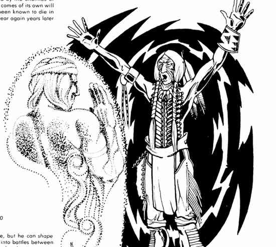

雷鸟、石肋与雅瑙鲁哈 · Thunder Bird、石肋 Stoneribs 与雅瑙鲁哈 Yanauluha
雷鸟是独一无二的巨鸟，以喙和翅膀攻击并释放闪电；它常预警重大灾难，从不因召唤而来，而是按自己的意志出现。石肋是能变成比目鱼、缩小体型的英雄，以弓或棍战斗。雅瑙鲁哈是最初的部族牧师，能召来本神话体系中的任何灵魂；祭司在需要特殊援助时会召唤他。

雷鸟是独一无二的巨鸟，以喙和翅膀攻击并释放闪电；它常预警重大灾难，从不因召唤而来，而是按自己的意志出现。石肋是能变成比目鱼、缩小体型的英雄，以弓或棍战斗。雅瑙鲁哈是最初的部族牧师，能召来本神话体系中的任何灵魂；祭司在需要特殊援助时会召唤他。
